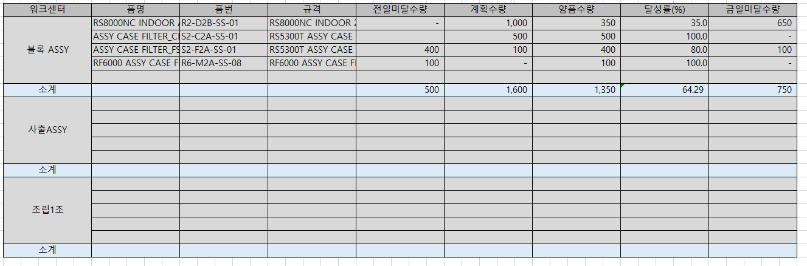

소계 - 개발툴
생산계획대비실적달성조회_mcf

mcf_SWMRPProdPlanRltListQuery
CREATE PROCEDURE mcf_SWMRPProdPlanRltListQuery
@ServiceSeq INT = 0,
@WorkingTag NVARCHAR(10)= '',
@CompanySeq INT = 1,
@LanguageSeq INT = 1,
@UserSeq INT = 0,
@PgmSeq INT = 0,
@IsTransaction BIT = 0
AS
DECLARE @BizUnit INT ,
@WorkDateFr NCHAR(8),
@WorkDateTo NCHAR(8),
@WorkCenterSeq INT ,
@WorkStartDate NCHAR(8) -- 작업일 From과 동일한 연도의 1월 1일
SELECT @BizUnit = ISNULL(A.BizUnit , 0),
@WorkDateFr = ISNULL(A.WorkDateFr ,''),
@WorkDateTo = ISNULL(A.WorkDateTo ,''),
@WorkCenterSeq = ISNULL(A.WorkCenterSeq, 0)
FROM #BIZ_IN_DataBlock1 AS A
SELECT @WorkStartDate = CONVERT(CHAR(8), DATEADD(YEAR, DATEDIFF(YEAR, 0, @WorkDateFr), 0), 112)
--==============================--
-- 1. 전일 미달 수량 구하기 (PreShortQty) : 작업일From일과 동일한 연도의 1월1일부터 작업일From까지 작업지시-작업실적 양품수량 --
--==============================--
-- 전일미달수량 임시테이블 (작업일연도 1월1일 ~ 작업일 From 까지의 지시수량)
SELECT ISNULL(A.WorkCenterSeq, 0) AS WorkCenterSeq ,
ISNULL(A.GoodItemSeq , 0) AS ItemSeq ,
ISNULL(SUM(A.OrderQty), 0) AS PreOrderQty
INTO #PreShortQtyOrder
FROM _TPDSFCWorkOrder AS A WITH(NOLOCK)
WHERE A.WorkDate BETWEEN @WorkStartDate AND @WorkDateFr
AND A.BizUnit = @BizUnit
AND (@WorkCenterSeq = 0 OR A.WorkCenterSeq = @WorkCenterSeq)
GROUP BY A.WorkCenterSeq,
A.GoodItemSeq
-- 전일미달수량 임시테이블 (작업일연도 1월1일 ~ 작업일 From 까지의 양품수량)
SELECT ISNULL(A.WorkCenterSeq , 0) AS WorkCenterSeq ,
ISNULL(A.GoodItemSeq , 0) AS ItemSeq ,
ISNULL(SUM(A.OKQty) , 0) AS PreOKQty
INTO #PreShortQtyReport
FROM _TPDSFCWorkReport AS A WITH(NOLOCK)
WHERE A.WorkDate BETWEEN @WorkStartDate AND @WorkDateFr
AND A.BizUnit = @BizUnit
AND (@WorkCenterSeq = 0 OR A.WorkCenterSeq = @WorkCenterSeq)
GROUP BY A.WorkCenterSeq,
A.GoodItemSeq
-- 지시수량 - 양품수량 (정렬하기 위해 임시테이블에 담기)
SELECT ISNULL(A.WorkCenterSeq,B.WorkCenterSeq) AS WorkCenterSeq ,
ISNULL(A.ItemSeq,B.ItemSeq) AS ItemSeq ,
ISNULL(A.PreOrderQty,0)-ISNULL(B.PreOKQty,0) AS PreShortQty
INTO #PreShortQtyTmp
FROM #PreShortQtyOrder AS A
FULL OUTER JOIN #PreShortQtyReport AS B ON A.WorkCenterSeq = B.WorkCenterSeq
AND A.ItemSeq = B.ItemSeq
CREATE TABLE #ResultTmp
(
WorkCenterSeq INT DEFAULT 0,
ItemSeq INT DEFAULT 0,
PreShortQty DECIMAL(19,5) DEFAULT 0,
PlanQty DECIMAL(19,5) DEFAULT 0,
OKQty DECIMAL(19,5) DEFAULT 0,
AchRate DECIMAL(19,5) DEFAULT 0,
ShortQty DECIMAL(19,5) DEFAULT 0,
ID INT IDENTITY(1,1) -- 정렬하기 위해 추가
)
-- 최종테이블에 워크센터 ,품목, 전일미달수량 INSERT
INSERT INTO #ResultTmp (WorkCenterSeq,ItemSeq,PreShortQty)
SELECT *
FROM #PreShortQtyTmp
ORDER BY WorkCenterSeq, ItemSeq
--==============================--
-- 2. 계획수량, 양품수량 구하기--
-- 2-1. 계획수량: 작업일From~To 까지의 작업지시 수량 합계
-- 2-2. 양품수량: 작업일From~To 까지의 작업실적 양품수량 합계
--==============================--
-- 2-1. 작업지시 임시테이블 담기 (From~To 까지의 작업지시 수량 합계)
SELECT ISNULL(A.WorkCenterSeq , 0) AS WorkCenterSeq ,
ISNULL(A.GoodItemSeq , 0) AS ItemSeq ,
ISNULL(SUM(A.OrderQty) , 0) AS OrderQty
INTO #PlanQty
FROM _TPDSFCWorkOrder AS A WITH(NOLOCK)
WHERE A.BizUnit = @BizUnit
AND (@WorkCenterSeq = 0 OR A.WorkCenterSeq = @WorkCenterSeq)
AND A.WorkDate BETWEEN @WorkDateFr AND @WorkDateTo
GROUP BY A.WorkCenterSeq ,
A.GoodItemSeq
-- 최종 테이블 없는 워크센터, 품목 INSERT
INSERT INTO #ResultTmp (WorkCenterSeq,ItemSeq)
SELECT A.WorkCenterSeq, A.ItemSeq
FROM #PlanQty AS A
LEFT OUTER JOIN #ResultTmp AS B ON A.WorkCenterSeq = B.WorkCenterSeq AND A.ItemSeq = B.ItemSeq
WHERE B.WorkCenterSeq IS NULL
-- 작업실적 임시테이블 담기 (From~To 까지의 작업실적 양품수량 합계)
SELECT ISNULL(A.WorkCenterSeq , 0) AS WorkCenterSeq ,
ISNULL(A.GoodItemSeq , 0) AS ItemSeq ,
ISNULL(SUM(A.OKQty) , 0) AS OKQty
INTO #OKQty
FROM _TPDSFCWorkReport AS A WITH(NOLOCK)
WHERE A.BizUnit = @BizUnit
AND (@WorkCenterSeq = 0 OR A.WorkCenterSeq = @WorkCenterSeq)
AND A.WorkDate BETWEEN @WorkDateFr AND @WorkDateTo
GROUP BY A.WorkCenterSeq ,
A.GoodItemSeq
-- 최종 테이블 없는 워크센터, 품목 INSERT
INSERT INTO #ResultTmp (WorkCenterSeq,ItemSeq)
SELECT A.WorkCenterSeq, A.ItemSeq
FROM #OKQty AS A
LEFT OUTER JOIN #ResultTmp AS B ON A.WorkCenterSeq = B.WorkCenterSeq AND A.ItemSeq = B.ItemSeq
WHERE B.WorkCenterSeq IS NULL
-- 계획수량, 양품수량, 달성률, 금일미달수량 UPDATE
UPDATE #ResultTmp
SET PlanQty = B.OrderQty,
OKQty = C.OKQty
FROM #ResultTmp AS A
JOIN #PlanQty AS B ON A.WorkCenterSeq = B.WorkCenterSeq AND A.ItemSeq = B.ItemSeq
JOIN #OKQty AS C ON A.WorkCenterSeq = C.WorkCenterSeq AND A.ItemSeq = C.ItemSeq
UPDATE #ResultTmp
SET AchRate = ISNULL(OKQty,1) /
CASE WHEN (ISNULL(PreShortQty,0) + ISNULL(PlanQty,0)) = 0 THEN 1 ELSE (ISNULL(PreShortQty,0) + ISNULL(PlanQty,0)) END
* 100, -- 달성률(%) : (전일미달수량 + 계획수량) / 양품수량 *100
ShortQty = (ISNULL(PreShortQty,0) + ISNULL(PlanQty,0)) - ISNULL(OKQty,0) -- 금일미달수량: (전일미달수량 + 계획수량) - 양품수량
FROM #ResultTmp AS A
SELECT A.WorkCenterSeq,
A.ItemSeq,
A.PreShortQty,
A.PlanQty ,
A.OKQty ,
A.AchRate ,
A.ShortQty ,
1 AS Gubun
INTO #Result
FROM #ResultTmp AS A
--=============--
-- 소 계 --
--=============--
INSERT #Result
SELECT A.WorkCenterSeq,
0, -- ItemSeq
SUM(A.PreShortQty),
SUM(A.PlanQty ),
SUM(A.OKQty ),
SUM(A.AchRate ),
SUM(A.ShortQty ),
2
FROM #ResultTmp AS A GROUP BY A.WorkCenterSeq
SELECT A.WorkCenterSeq,
CASE WHEN A.ItemSeq = 0
THEN '소계'
ELSE B.WorkCenterName END AS WorkCenterName,
A.ItemSeq,
ISNULL(C.ItemName,'') AS ItemName ,
ISNULL(C.ItemNo ,'') AS ItemNo ,
ISNULL(C.Spec ,'') AS Spec ,
PreShortQty AS PreShortQty,
PlanQty AS PlanQty ,
OKQty AS OKQty ,
AchRate AS AchRate ,
ShortQty AS ShortQty
FROM #Result AS A
LEFT OUTER JOIN _TPDBaseWorkCenter AS B WITH(NOLOCK) ON B.CompanySeq = @CompanySeq
AND B.WorkCenterSeq = A.WorkCenterSeq
LEFT OUTER JOIN _TDAItem AS C WITH(NOLOCK) ON C.CompanySeq = @CompanySeq
AND C.ItemSeq = A.ItemSeq
ORDER BY A.WorkCenterSeq, A.Gubun,A.ItemSeq
RETURN
--go
--begin tran
--DECLARE @CONST_#BIZ_IN_DataBlock1 INT-- , @CONST_#BIZ_OUT_DataBlock1 INT--SELECT @CONST_#BIZ_IN_DataBlock1 = 0-- , @CONST_#BIZ_OUT_DataBlock1 = 0
--IF @CONST_#BIZ_IN_DataBlock1 = 0
--BEGIN
-- CREATE TABLE #BIZ_IN_DataBlock1
-- (-- WorkingTag NCHAR(1)-- , IDX_NO INT-- , DataSeq INT-- , Selected INT-- , MessageType INT-- , Status INT-- , Result NVARCHAR(255)-- , ROW_IDX INT-- , IsChangedMst NCHAR(1)-- , TABLE_NAME NVARCHAR(255)-- , BizUnit INT, WorkDateFr NCHAR(8), WorkDateTo NCHAR(8), WorkCenterSeq INT-- ) -- SET @CONST_#BIZ_IN_DataBlock1 = 1--END--IF @CONST_#BIZ_OUT_DataBlock1 = 0--BEGIN-- CREATE TABLE #BIZ_OUT_DataBlock1-- (-- WorkingTag NCHAR(1)-- , IDX_NO INT-- , DataSeq INT-- , Selected INT-- , MessageType INT-- , Status INT-- , Result NVARCHAR(255)-- , ROW_IDX INT-- , IsChangedMst NCHAR(1)-- , TABLE_NAME NVARCHAR(255)-- , BizUnit INT, WorkDateFr NCHAR(8), WorkDateTo NCHAR(8), WorkCenterSeq INT, WorkCenterName NVARCHAR(100), ItemName NVARCHAR(100), ItemNo NVARCHAR(100), Spec NVARCHAR(100), ItemSeq INT, PreShortQty DECIMAL(19, 5), PlanQty DECIMAL(19, 5), OKQty DECIMAL(19, 5), AchRate DECIMAL(19, 5), ShortQty DECIMAL(19, 5)-- ) -- SET @CONST_#BIZ_OUT_DataBlock1 = 1--END--DECLARE @INPUT_ERROR_MESSAGE NVARCHAR(4000)
-- , @INPUT_ERROR_SEVERITY INT
-- , @INPUT_ERROR_STATE INT
-- , @INPUT_ERROR_PROCEDURE NVARCHAR(128)
--INSERT INTO #BIZ_IN_DataBlock1 (WorkingTag, IDX_NO, DataSeq, Selected, Status, Result, ROW_IDX, IsChangedMst, TABLE_NAME, BizUnit, WorkDateFr, WorkDateTo, WorkCenterSeq) --SELECT N'A', 1, 1, 1, 0, NULL, NULL, N'1', N'DataBlock1', N'2', N'20221026', N'20221026', N'1'--IF @@ERROR \<> 0 RETURN
--DECLARE @HasError NCHAR(1)-- , @UseTransaction NCHAR(1)-- -- 내부 SP용 파라메터-- , @ServiceSeq INT-- , @MethodSeq INT-- , @WorkingTag NVARCHAR(10)-- , @CompanySeq INT-- , @LanguageSeq INT-- , @UserSeq INT-- , @PgmSeq INT-- , @IsTransaction BIT--SET @HasError = N'0'--SET @UseTransaction = N'0'--BEGIN TRY--SET @ServiceSeq = 95320041----SET @MethodSeq = 1--SET @WorkingTag = N''--SET @CompanySeq = 1--SET @LanguageSeq = 1--SET @UserSeq = 27292--SET @PgmSeq = 95320074--SET @IsTransaction = 0---- ExecuteOrder : 1 : Start--EXEC mcf_SWMRPProdPlanRltListQuery-- @ServiceSeq-- , @WorkingTag-- , @CompanySeq-- , @LanguageSeq-- , @UserSeq-- , @PgmSeq-- , @IsTransaction
--IF @@ERROR \<> 0 --BEGIN-- SET @HasError = N'1'-- GOTO GOTO_END--END---- ExecuteOrder : 1 : End--GOTO_END:
--END TRY
--BEGIN CATCH
---- SQL 오류인 경우는 여기서 처리가 된다
-- IF @UseTransaction = N'1'
-- ROLLBACK TRAN
-- DECLARE @ERROR_MESSAGE NVARCHAR(4000)
-- , @ERROR_SEVERITY INT
-- , @ERROR_STATE INT
-- , @ERROR_PROCEDURE NVARCHAR(128)
-- SELECT @ERROR_MESSAGE = ERROR_MESSAGE()
-- , @ERROR_SEVERITY = ERROR_SEVERITY()
-- , @ERROR_STATE = ERROR_STATE()
-- , @ERROR_PROCEDURE = ERROR_PROCEDURE()
-- RAISERROR (@ERROR_MESSAGE, @ERROR_SEVERITY, @ERROR_STATE, @ERROR_PROCEDURE)
-- RETURN
--END CATCH
---- SQL 오류를 제외한 체크로직으로 발생된 오류는 여기서 처리
--IF @HasError = N'1' AND @UseTransaction = N'1'
-- ROLLBACK TRAN
--DROP TABLE #BIZ_IN_DataBlock1--DROP TABLE #BIZ_OUT_DataBlock1--rollback tran